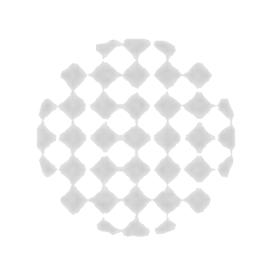
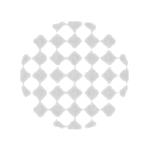

"Hello, kind person!"
INFO ABOUT THE PROJECT
The Dan Kuczyński Foundation is a nonprofit organization created to empower individuals and organizations to make a significant difference in the quality of life of people often forgotten. We’re dedicated to creating positive changes in the lives of youth, seniors, the hungry, homeless and the imprisoned population, all who need a boost envisioning a happier and deeply satisfying way of life. Our passionate staff, generous donors and caring group of international volunteers provide the vision, inspiration, and resources needed to empower these important members of our society.
Please contact us per Email for any further questions about our organization.
b.szczerbak@gmail.com